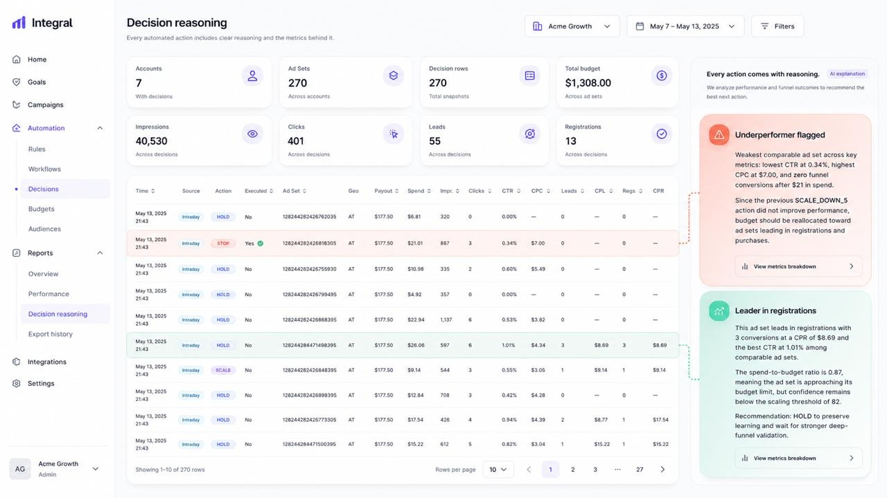
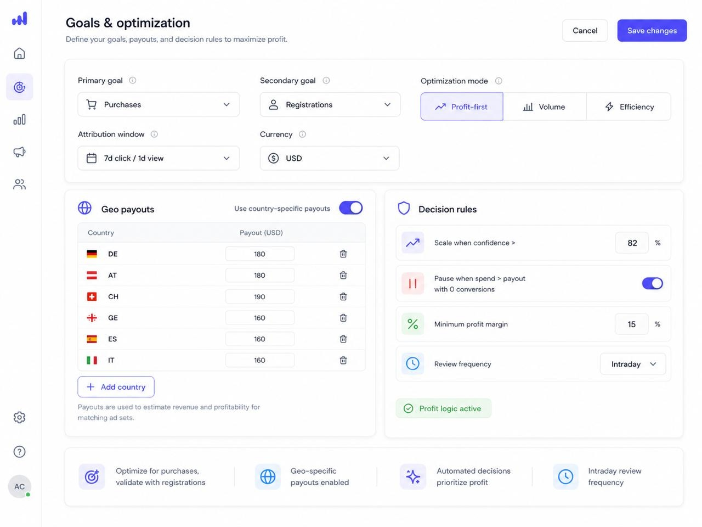
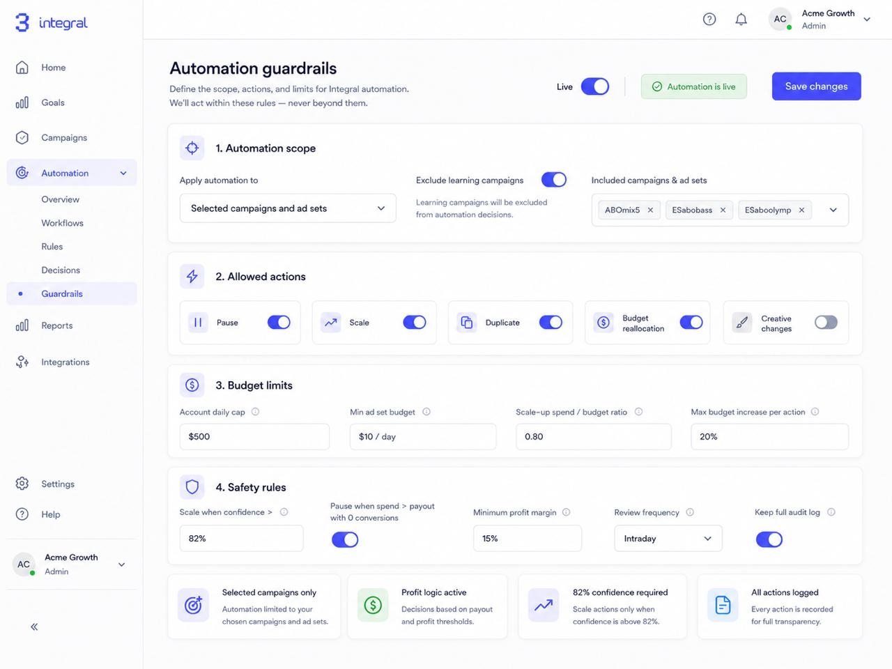
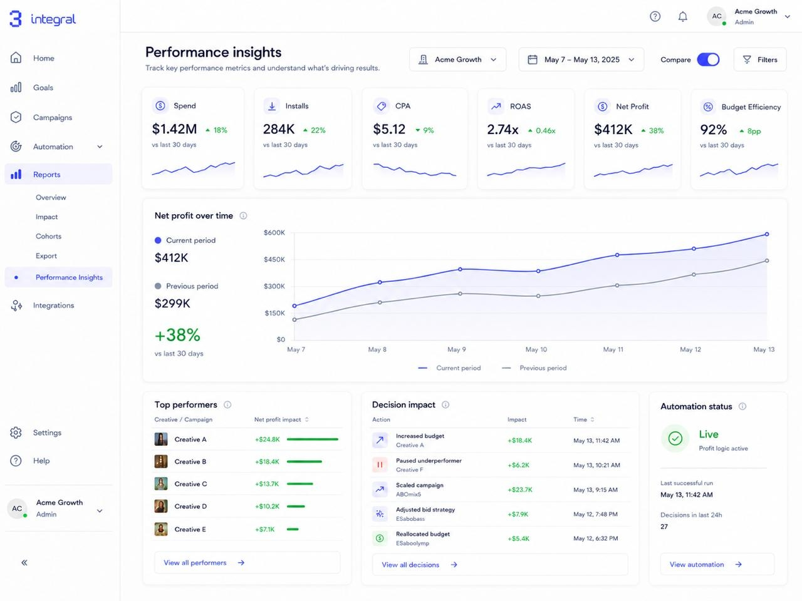
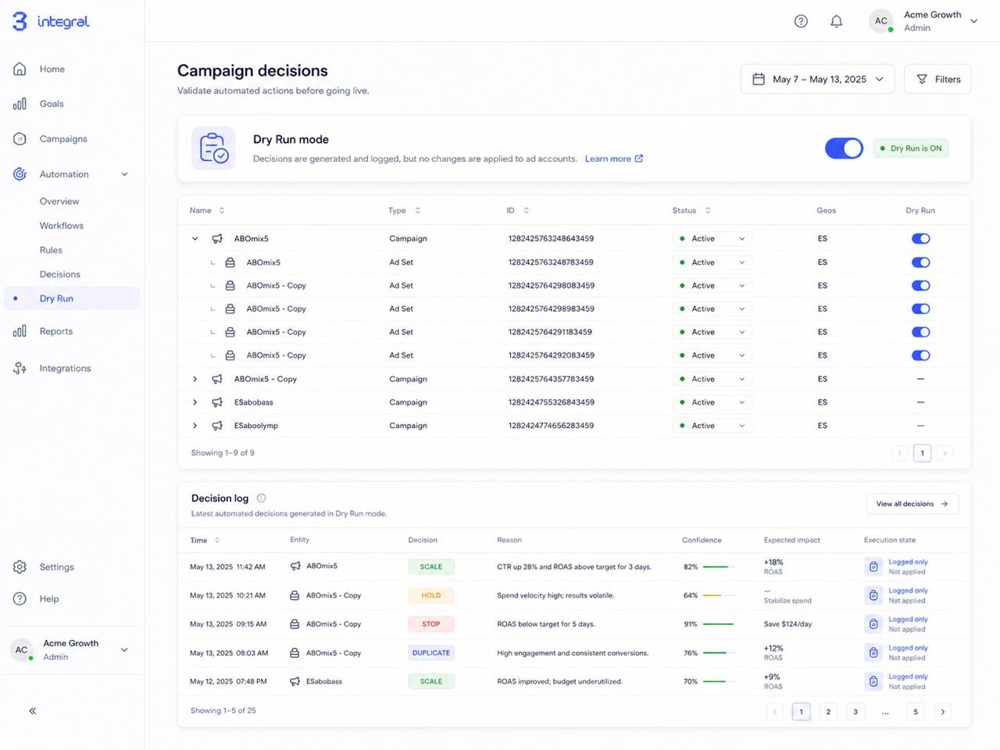

Вы задаёте рамки
Целевая экономика, лимиты, max scale, частота цикла. Это границы, внутри которых работает система.
Первая система автономного управления UA-маркетингом.
Integral управляет UA-кампаниями в Facebook, Moloco, TikTok, Google и AppLovin: ставит на паузу убыточное, масштабирует прибыльное, перераспределяет бюджет и удерживает экономику внутри ваших рамок — каждые 30 минут.
Система останавливает потери раньше, чем команда успевает среагировать, и освобождает байеров для стратегии и креативов.

«Ваши агенты ведут себя как UA-менеджеры: приходят, анализируют данные, делают выводы и начинают действовать»
Целевая экономика, лимиты, max scale, частота цикла. Это границы, внутри которых работает система.
Pause, resume, scale — каждые 30 минут, по кампаниям и ad set'ам. Не подсказки, а действия.
Каждое решение объясняется. Можно вмешаться в любой момент — рамки скорректируются, система продолжит.
Integral не остаётся на одном уровне. Каждое решение и каждый сигнал — это материал для обучения. Система проходит через четыре этапа зрелости, и движение всегда вверх.
Система впитывает данные аккаунта, специфику воронки и логику команды.
Принимает корректные операционные решения внутри ваших рамок без участия команды.
Замечает тонкие сигналы, ловит upside раньше, держит экономику стабильной.
Эффект лучших решений — в масштабе всего аккаунта, без операционной нагрузки на людей.
Внутри любой UA-команды решения распадаются на три уровня: операционные — внутри дня, административные — неделя-месяц, стратегические — квартал и более. Integral переносит эту логику в архитектуру управления.
Аномалии CPM, CPA, CR. Скачки расхода, перегретые ad set'ы. Реакция в пределах часа.
Pause / resume / корректировка ставкиКакие GEO стабильно дают экономику, какие связки удерживают результат, где паттерн повторяется.
Scale / duplication / приоритет тестовРешает, на какие источники в разных GEO перераспределяется бюджет. Где риск выше потенциальной прибыли. Какие гипотезы сворачивать.
Перераспределение бюджета по источникам и GEOГлавное отличие от автоправил: автоправило — один угол зрения, который быстро устаревает. Integral смотрит на три горизонта одновременно и сводит их в одно решение.
Аналитика, масштабирование, инсайты и тестирование креативов — в одном контуре управления, который работает на прибыль, а не на спенд.
Pause, resume, корректировка бюджетов и ставок по кампаниям и ad set'ам — каждые 30 минут.
Система масштабирует сильные связки и дуплицирует рабочие конфигурации — тогда, когда сигнал устойчив.
Аномалии, устойчивые паттерны по GEO и креативам, факторы экономики — всё видно в одном интерфейсе.
Память о том, что работало и что нет. Система подсказывает приоритеты и отсекает повторы.

Integral не забирает контроль — он поднимает уровень управления. Команда задаёт рамки, система действует внутри них.
CPA, CPR, Deposit. Система работает на ваши цели.
Жёсткие рамки бюджета, за которые система не может выйти.
Сначала вы видите, что система собирается сделать. Действия — после валидации.
Не соответствует рамкам — не исполняется.
Почему остановлено, почему масштабировано, почему не тронуто — по каждому действию.

До 60% времени байера уходит на повторяющиеся решения. Это не творчество — это операционка.
Слабые ad set'ы живут дольше нужного. Сильные получают бюджет с опозданием. Каждый час — упущенная прибыль.
Креативы и GEO тестируются повторно. Каждое решение принимается заново — как будто истории нет.
На масштабе $1M/месяц компании теряют ~$40k/месяц ($480k/год) только на запоздалых остановках и неоптимальном распределении бюджета.
Разные слои логики работают на разных горизонтах. Независимый контроль не даёт ошибкам масштабироваться.
Непрерывный поток данных Meta/Facebook на вход системы.
Ловит аномалии: резкие движения CPM, CPA, CR. Реагирует на события внутри часа.
Видит дни и недели. Выделяет устойчивые паттерны: какие GEO стабильно дороже, какие креативы работают долго.
Решает, на какие источники в разных GEO перераспределяется следующий бюджет: какие связки масштабировать, какие гипотезы проверять, где риск выше потенциальной прибыли.
Независимая проверка каждого решения. Если действие выходит за границы — оно не пройдёт.
Только после проверки система отправляет команды в рекламные кабинеты: pause, resume, scale.
Накапливает историю и улучшает качество будущих циклов.
Система обучена думать, как профессиональный медиабайер: оценивает риск, видит возможности масштабирования, учитывает контекст аккаунта.
Мы постоянно дообучаем Integral и добавляем новые навыки на основе обратной связи от команд.
Каждое действие проходит через независимый слой контроля. Если решение выходит за рамки (лимиты, экономика, max scale) — оно блокируется до исполнения.
Каждое действие сверяется с целевой экономикой (CPA/CPR/Deposit), лимитами на аккаунт и адсеты, максимальным scale.
Система накапливает паттерны по креативам, GEO и типам кампаний. С каждым циклом она становится умнее — не статичные правила, а самообучающаяся архитектура.

Слабые кампании и адсеты останавливаются раньше; решения принимаются по соотношению риск/доходность, а не по ощущению.
Сильные связки получают бюджет, когда сигнал уже устойчив. Спенд быстрее уходит в самые прибыльные карманы.
Система накапливает паттерны: что тестировать дальше, а что повторять не нужно.
Integral не снимает работу с команды — он снимает операционные задачи, чтобы хорошие байеры приносили ещё больше денег.
Возвращает время туда, где алгоритм пока не заменяет человека: стратегия по GEO, приоритизация креативных гипотез, оценка рыночных возможностей и партнёрств.
2-5 минут. Подключение по API Meta/Facebook, TikTok, Google, AppLovin или Moloco. Вы задаёте целевую экономику (CPA/CPR/Deposit), лимиты расходов и рамки масштабирования.
Integral принимает решения без права фактических изменений. Вы видите, что система предложила бы сделать, но кабинет остаётся под вашим контролем.
Вы проверяете: качество решений, скорость цикла duplication-scale, снижение ручной нагрузки, экономический uplift.
Integral принимает pause/resume/scale в рамках заданных правил. Команда фокусируется на стратегии, креативах и росте.

Команда Integral проводит онбординг бесплатно. Мы поможем подключить аккаунты, настроим экономические рамки под вашу модель и проведём в dry run вместе с вашей командой.
Эффект максимален там, где внимание сильных байеров слишком дорого, чтобы тратить его на рутину.
Integral — это партнёр для управления операционным контуром, а не замена команды и не универсальный инструмент.
Мы не «ещё один стартап в незнакомой сфере». Integral создаётся командой, которая сама управляла миллионами долларов рекламного бюджета и понимает, как работают UA-команды изнутри.
$7M месячного бюджета под управлением · Магистр менеджмента и экономики
Lead-программист в tier-1 компаниях · Эксперт по внедрению LLM в продакшен
Кандидат экономических наук · Автор методологии 8PM
Нам важно не просто продать продукт, а делать Integral вместе с теми, кто задаёт рынок.
— Григорий Балаганский, CEO
Мы предлагаем пилот, где вы управляете процессом на каждом этапе: от настройки рамок до валидации качества решений. Integral работает в вашей экономике, с вашими лимитами, под вашим контролем.
Демо архитектуры и логики системы.
30 minКонсультация по интеграции и настройке рамок.
45 minСовместный аудит: где система может усилить команду.
Сейчас работаем с ограниченным числом партнёров. Каждый запуск — это совместная работа, а не просто подключение.